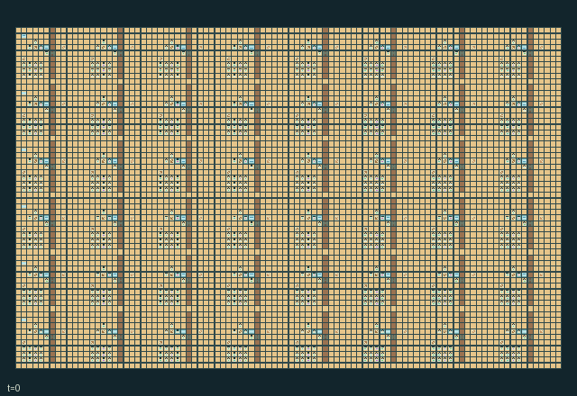

GI240 · Dune Caravan Commons

Deliver 96 water units to moving caravan camels, using maintained wind pumps, physical pipes and shared row aquifers before H=1024.
Identity and original contract
768 independently actionable roles; 18 discrete commands per role; 683 native observation columns per role; original horizon 1024 steps. Declared per-step reward range: -8.0 to 8.0. Observation regime: partially_observable.
Source SHA-256: 79390a63883d985b3c588105772047a29e93a7dfaf03c16a5a602d2f526fa6c3
The objective, rewards, population, map and horizon remain original. A preview is not a success claim.
Objective and gameplay
Deliver 96 water units to moving caravan camels, using maintained wind pumps, physical pipes and shared row aquifers before H=1024.
Pump operation needs another actor holding its intake clear at the same step. Pumps compete for shared row water in geographical upstream order. Wind buries exposed pipes; building walls changes travel, shade and beacon transmission. Staffed gates and water rescue change others opportunities.
- 768 separately controllable people form 48 crews. Initial tools assign engineering, intake, carrying and gate tasks; adjacent partners may trade them.
- An engineer can pump only while an intake tender holds the same pump clear, both pipe cells connect to its cistern and shared water remains.
- Storms bury exposed pipe cells. Clearing the intake restores buried pipe; a nearby shade wall can block sand and also obstruct beacon signals.
- Take water from cisterns and carry it to moving camels, or spend it rescuing an exhausted adjacent worker.
- Gate keepers hold physical gates open. Beacons relay carried messages east one crew per tick only through an unobstructed corridor.
- Native local views and actions support future human takeover. No human interface or animation has been verified.
Ending: Natural completion at 96 cumulative caravan deliveries; otherwise truncate at 1024.
What this game explores
Resource commons & externalities: An action changes a persistent resource or burden that another role also encounters. Compare extraction with maintenance and record the downstream resource trajectory.
Complementary production & service: A useful outcome requires ordered stages, scarce equipment or another role's capability. Measure real completed products and resource circulation rather than counting intermediate actions as success.
Joint transport & shared access: Positions, load geometry, occupancy and persistent access constrain whose action can succeed next. Distinguish physical handoff, shared controls and simultaneous force from a cosmetic cooperation label.
These are questions supported by rule structure, not observed learning effects.
Play it: operating walkthrough
crucibles play --game gi240Keep Python running and open its printed address. Select this game, set a seed and press Create session. The game itself is always English.
Assign a role range to Host with Assign / take over, or Assign all roles. Invite a second participant with Create player invitation, then assign a disjoint subset. Every original role is available.
For every owned role choose a legal command and press Queue. Arrow keys / WASD queue a declared directional action for the current role camera when available. Space or Advance one joint step advances everyone together. Non-directional games use the selectors.
Unqueued roles use the labelled untrained uniform-legal policy. Take over or release roles before the next step without resetting. Full-state debug is privileged and permanently logged; role cameras preserve permissions. Close the session to retain logs. Server restart does not restore sessions.
Complete command reference
IDs and English labels exactly match the manifest. Availability depends on role, resources, location and phase. An available action can still have no productive effect.
0·Rest
1·East
2·West
3·South
4·North
5·Collect building blocks
6·Hold intake clear
7·Operate wind pump
8·Lay pipe underfoot
9·Build shade wall east
10·Fill water flask
11·Deliver water to camel
12·Staff gate
13·Transmit carried message at beacon
14·Exchange tools
15·Handoff cargo and message
16·Rescue exhausted neighbor with water
17·Read received beacon message
Roles and capability identifiers
These original role names describe capabilities, not interchangeable skins. Check each owned role's legal selector before planning handoffs.
agent_0·engineer of caravan crew 0
agent_1·intake tender of caravan crew 0
agent_2·water courier of caravan crew 0
agent_3·gate keeper of caravan crew 0
agent_4·engineer of caravan crew 0
agent_5·intake tender of caravan crew 0
agent_6·water courier of caravan crew 0
agent_7·gate keeper of caravan crew 0
agent_8·engineer of caravan crew 0
agent_9·intake tender of caravan crew 0
agent_10·water courier of caravan crew 0
agent_11·gate keeper of caravan crew 0
agent_12·engineer of caravan crew 0
agent_13·intake tender of caravan crew 0
agent_14·water courier of caravan crew 0
agent_15·gate keeper of caravan crew 0
agent_16·engineer of caravan crew 1
agent_17·intake tender of caravan crew 1
agent_18·water courier of caravan crew 1
agent_19·gate keeper of caravan crew 1
agent_20·engineer of caravan crew 1
agent_21·intake tender of caravan crew 1
agent_22·water courier of caravan crew 1
agent_23·gate keeper of caravan crew 1
agent_24·engineer of caravan crew 1
agent_25·intake tender of caravan crew 1
agent_26·water courier of caravan crew 1
agent_27·gate keeper of caravan crew 1
agent_28·engineer of caravan crew 1
agent_29·intake tender of caravan crew 1
agent_30·water courier of caravan crew 1
agent_31·gate keeper of caravan crew 1
agent_32·engineer of caravan crew 2
agent_33·intake tender of caravan crew 2
agent_34·water courier of caravan crew 2
agent_35·gate keeper of caravan crew 2
agent_36·engineer of caravan crew 2
agent_37·intake tender of caravan crew 2
agent_38·water courier of caravan crew 2
agent_39·gate keeper of caravan crew 2
agent_40·engineer of caravan crew 2
agent_41·intake tender of caravan crew 2
agent_42·water courier of caravan crew 2
agent_43·gate keeper of caravan crew 2
agent_44·engineer of caravan crew 2
agent_45·intake tender of caravan crew 2
agent_46·water courier of caravan crew 2
agent_47·gate keeper of caravan crew 2
agent_48·engineer of caravan crew 3
agent_49·intake tender of caravan crew 3
agent_50·water courier of caravan crew 3
agent_51·gate keeper of caravan crew 3
agent_52·engineer of caravan crew 3
agent_53·intake tender of caravan crew 3
agent_54·water courier of caravan crew 3
agent_55·gate keeper of caravan crew 3
agent_56·engineer of caravan crew 3
agent_57·intake tender of caravan crew 3
agent_58·water courier of caravan crew 3
agent_59·gate keeper of caravan crew 3
agent_60·engineer of caravan crew 3
agent_61·intake tender of caravan crew 3
agent_62·water courier of caravan crew 3
agent_63·gate keeper of caravan crew 3
agent_64·engineer of caravan crew 4
agent_65·intake tender of caravan crew 4
agent_66·water courier of caravan crew 4
agent_67·gate keeper of caravan crew 4
agent_68·engineer of caravan crew 4
agent_69·intake tender of caravan crew 4
agent_70·water courier of caravan crew 4
agent_71·gate keeper of caravan crew 4
agent_72·engineer of caravan crew 4
agent_73·intake tender of caravan crew 4
agent_74·water courier of caravan crew 4
agent_75·gate keeper of caravan crew 4
agent_76·engineer of caravan crew 4
agent_77·intake tender of caravan crew 4
agent_78·water courier of caravan crew 4
agent_79·gate keeper of caravan crew 4
agent_80·engineer of caravan crew 5
agent_81·intake tender of caravan crew 5
agent_82·water courier of caravan crew 5
agent_83·gate keeper of caravan crew 5
agent_84·engineer of caravan crew 5
agent_85·intake tender of caravan crew 5
agent_86·water courier of caravan crew 5
agent_87·gate keeper of caravan crew 5
agent_88·engineer of caravan crew 5
agent_89·intake tender of caravan crew 5
agent_90·water courier of caravan crew 5
agent_91·gate keeper of caravan crew 5
agent_92·engineer of caravan crew 5
agent_93·intake tender of caravan crew 5
agent_94·water courier of caravan crew 5
agent_95·gate keeper of caravan crew 5
agent_96·engineer of caravan crew 6
agent_97·intake tender of caravan crew 6
agent_98·water courier of caravan crew 6
agent_99·gate keeper of caravan crew 6
agent_100·engineer of caravan crew 6
agent_101·intake tender of caravan crew 6
agent_102·water courier of caravan crew 6
agent_103·gate keeper of caravan crew 6
agent_104·engineer of caravan crew 6
agent_105·intake tender of caravan crew 6
agent_106·water courier of caravan crew 6
agent_107·gate keeper of caravan crew 6
agent_108·engineer of caravan crew 6
agent_109·intake tender of caravan crew 6
agent_110·water courier of caravan crew 6
agent_111·gate keeper of caravan crew 6
agent_112·engineer of caravan crew 7
agent_113·intake tender of caravan crew 7
agent_114·water courier of caravan crew 7
agent_115·gate keeper of caravan crew 7
agent_116·engineer of caravan crew 7
agent_117·intake tender of caravan crew 7
agent_118·water courier of caravan crew 7
agent_119·gate keeper of caravan crew 7
agent_120·engineer of caravan crew 7
agent_121·intake tender of caravan crew 7
agent_122·water courier of caravan crew 7
agent_123·gate keeper of caravan crew 7
agent_124·engineer of caravan crew 7
agent_125·intake tender of caravan crew 7
agent_126·water courier of caravan crew 7
agent_127·gate keeper of caravan crew 7
agent_128·engineer of caravan crew 8
agent_129·intake tender of caravan crew 8
agent_130·water courier of caravan crew 8
agent_131·gate keeper of caravan crew 8
agent_132·engineer of caravan crew 8
agent_133·intake tender of caravan crew 8
agent_134·water courier of caravan crew 8
agent_135·gate keeper of caravan crew 8
agent_136·engineer of caravan crew 8
agent_137·intake tender of caravan crew 8
agent_138·water courier of caravan crew 8
agent_139·gate keeper of caravan crew 8
agent_140·engineer of caravan crew 8
agent_141·intake tender of caravan crew 8
agent_142·water courier of caravan crew 8
agent_143·gate keeper of caravan crew 8
agent_144·engineer of caravan crew 9
agent_145·intake tender of caravan crew 9
agent_146·water courier of caravan crew 9
agent_147·gate keeper of caravan crew 9
agent_148·engineer of caravan crew 9
agent_149·intake tender of caravan crew 9
agent_150·water courier of caravan crew 9
agent_151·gate keeper of caravan crew 9
agent_152·engineer of caravan crew 9
agent_153·intake tender of caravan crew 9
agent_154·water courier of caravan crew 9
agent_155·gate keeper of caravan crew 9
agent_156·engineer of caravan crew 9
agent_157·intake tender of caravan crew 9
agent_158·water courier of caravan crew 9
agent_159·gate keeper of caravan crew 9
agent_160·engineer of caravan crew 10
agent_161·intake tender of caravan crew 10
agent_162·water courier of caravan crew 10
agent_163·gate keeper of caravan crew 10
agent_164·engineer of caravan crew 10
agent_165·intake tender of caravan crew 10
agent_166·water courier of caravan crew 10
agent_167·gate keeper of caravan crew 10
agent_168·engineer of caravan crew 10
agent_169·intake tender of caravan crew 10
agent_170·water courier of caravan crew 10
agent_171·gate keeper of caravan crew 10
agent_172·engineer of caravan crew 10
agent_173·intake tender of caravan crew 10
agent_174·water courier of caravan crew 10
agent_175·gate keeper of caravan crew 10
agent_176·engineer of caravan crew 11
agent_177·intake tender of caravan crew 11
agent_178·water courier of caravan crew 11
agent_179·gate keeper of caravan crew 11
agent_180·engineer of caravan crew 11
agent_181·intake tender of caravan crew 11
agent_182·water courier of caravan crew 11
agent_183·gate keeper of caravan crew 11
agent_184·engineer of caravan crew 11
agent_185·intake tender of caravan crew 11
agent_186·water courier of caravan crew 11
agent_187·gate keeper of caravan crew 11
agent_188·engineer of caravan crew 11
agent_189·intake tender of caravan crew 11
agent_190·water courier of caravan crew 11
agent_191·gate keeper of caravan crew 11
agent_192·engineer of caravan crew 12
agent_193·intake tender of caravan crew 12
agent_194·water courier of caravan crew 12
agent_195·gate keeper of caravan crew 12
agent_196·engineer of caravan crew 12
agent_197·intake tender of caravan crew 12
agent_198·water courier of caravan crew 12
agent_199·gate keeper of caravan crew 12
agent_200·engineer of caravan crew 12
agent_201·intake tender of caravan crew 12
agent_202·water courier of caravan crew 12
agent_203·gate keeper of caravan crew 12
agent_204·engineer of caravan crew 12
agent_205·intake tender of caravan crew 12
agent_206·water courier of caravan crew 12
agent_207·gate keeper of caravan crew 12
agent_208·engineer of caravan crew 13
agent_209·intake tender of caravan crew 13
agent_210·water courier of caravan crew 13
agent_211·gate keeper of caravan crew 13
agent_212·engineer of caravan crew 13
agent_213·intake tender of caravan crew 13
agent_214·water courier of caravan crew 13
agent_215·gate keeper of caravan crew 13
agent_216·engineer of caravan crew 13
agent_217·intake tender of caravan crew 13
agent_218·water courier of caravan crew 13
agent_219·gate keeper of caravan crew 13
agent_220·engineer of caravan crew 13
agent_221·intake tender of caravan crew 13
agent_222·water courier of caravan crew 13
agent_223·gate keeper of caravan crew 13
agent_224·engineer of caravan crew 14
agent_225·intake tender of caravan crew 14
agent_226·water courier of caravan crew 14
agent_227·gate keeper of caravan crew 14
agent_228·engineer of caravan crew 14
agent_229·intake tender of caravan crew 14
agent_230·water courier of caravan crew 14
agent_231·gate keeper of caravan crew 14
agent_232·engineer of caravan crew 14
agent_233·intake tender of caravan crew 14
agent_234·water courier of caravan crew 14
agent_235·gate keeper of caravan crew 14
agent_236·engineer of caravan crew 14
agent_237·intake tender of caravan crew 14
agent_238·water courier of caravan crew 14
agent_239·gate keeper of caravan crew 14
agent_240·engineer of caravan crew 15
agent_241·intake tender of caravan crew 15
agent_242·water courier of caravan crew 15
agent_243·gate keeper of caravan crew 15
agent_244·engineer of caravan crew 15
agent_245·intake tender of caravan crew 15
agent_246·water courier of caravan crew 15
agent_247·gate keeper of caravan crew 15
agent_248·engineer of caravan crew 15
agent_249·intake tender of caravan crew 15
agent_250·water courier of caravan crew 15
agent_251·gate keeper of caravan crew 15
agent_252·engineer of caravan crew 15
agent_253·intake tender of caravan crew 15
agent_254·water courier of caravan crew 15
agent_255·gate keeper of caravan crew 15
agent_256·engineer of caravan crew 16
agent_257·intake tender of caravan crew 16
agent_258·water courier of caravan crew 16
agent_259·gate keeper of caravan crew 16
agent_260·engineer of caravan crew 16
agent_261·intake tender of caravan crew 16
agent_262·water courier of caravan crew 16
agent_263·gate keeper of caravan crew 16
agent_264·engineer of caravan crew 16
agent_265·intake tender of caravan crew 16
agent_266·water courier of caravan crew 16
agent_267·gate keeper of caravan crew 16
agent_268·engineer of caravan crew 16
agent_269·intake tender of caravan crew 16
agent_270·water courier of caravan crew 16
agent_271·gate keeper of caravan crew 16
agent_272·engineer of caravan crew 17
agent_273·intake tender of caravan crew 17
agent_274·water courier of caravan crew 17
agent_275·gate keeper of caravan crew 17
agent_276·engineer of caravan crew 17
agent_277·intake tender of caravan crew 17
agent_278·water courier of caravan crew 17
agent_279·gate keeper of caravan crew 17
agent_280·engineer of caravan crew 17
agent_281·intake tender of caravan crew 17
agent_282·water courier of caravan crew 17
agent_283·gate keeper of caravan crew 17
agent_284·engineer of caravan crew 17
agent_285·intake tender of caravan crew 17
agent_286·water courier of caravan crew 17
agent_287·gate keeper of caravan crew 17
agent_288·engineer of caravan crew 18
agent_289·intake tender of caravan crew 18
agent_290·water courier of caravan crew 18
agent_291·gate keeper of caravan crew 18
agent_292·engineer of caravan crew 18
agent_293·intake tender of caravan crew 18
agent_294·water courier of caravan crew 18
agent_295·gate keeper of caravan crew 18
agent_296·engineer of caravan crew 18
agent_297·intake tender of caravan crew 18
agent_298·water courier of caravan crew 18
agent_299·gate keeper of caravan crew 18
agent_300·engineer of caravan crew 18
agent_301·intake tender of caravan crew 18
agent_302·water courier of caravan crew 18
agent_303·gate keeper of caravan crew 18
agent_304·engineer of caravan crew 19
agent_305·intake tender of caravan crew 19
agent_306·water courier of caravan crew 19
agent_307·gate keeper of caravan crew 19
agent_308·engineer of caravan crew 19
agent_309·intake tender of caravan crew 19
agent_310·water courier of caravan crew 19
agent_311·gate keeper of caravan crew 19
agent_312·engineer of caravan crew 19
agent_313·intake tender of caravan crew 19
agent_314·water courier of caravan crew 19
agent_315·gate keeper of caravan crew 19
agent_316·engineer of caravan crew 19
agent_317·intake tender of caravan crew 19
agent_318·water courier of caravan crew 19
agent_319·gate keeper of caravan crew 19
agent_320·engineer of caravan crew 20
agent_321·intake tender of caravan crew 20
agent_322·water courier of caravan crew 20
agent_323·gate keeper of caravan crew 20
agent_324·engineer of caravan crew 20
agent_325·intake tender of caravan crew 20
agent_326·water courier of caravan crew 20
agent_327·gate keeper of caravan crew 20
agent_328·engineer of caravan crew 20
agent_329·intake tender of caravan crew 20
agent_330·water courier of caravan crew 20
agent_331·gate keeper of caravan crew 20
agent_332·engineer of caravan crew 20
agent_333·intake tender of caravan crew 20
agent_334·water courier of caravan crew 20
agent_335·gate keeper of caravan crew 20
agent_336·engineer of caravan crew 21
agent_337·intake tender of caravan crew 21
agent_338·water courier of caravan crew 21
agent_339·gate keeper of caravan crew 21
agent_340·engineer of caravan crew 21
agent_341·intake tender of caravan crew 21
agent_342·water courier of caravan crew 21
agent_343·gate keeper of caravan crew 21
agent_344·engineer of caravan crew 21
agent_345·intake tender of caravan crew 21
agent_346·water courier of caravan crew 21
agent_347·gate keeper of caravan crew 21
agent_348·engineer of caravan crew 21
agent_349·intake tender of caravan crew 21
agent_350·water courier of caravan crew 21
agent_351·gate keeper of caravan crew 21
agent_352·engineer of caravan crew 22
agent_353·intake tender of caravan crew 22
agent_354·water courier of caravan crew 22
agent_355·gate keeper of caravan crew 22
agent_356·engineer of caravan crew 22
agent_357·intake tender of caravan crew 22
agent_358·water courier of caravan crew 22
agent_359·gate keeper of caravan crew 22
agent_360·engineer of caravan crew 22
agent_361·intake tender of caravan crew 22
agent_362·water courier of caravan crew 22
agent_363·gate keeper of caravan crew 22
agent_364·engineer of caravan crew 22
agent_365·intake tender of caravan crew 22
agent_366·water courier of caravan crew 22
agent_367·gate keeper of caravan crew 22
agent_368·engineer of caravan crew 23
agent_369·intake tender of caravan crew 23
agent_370·water courier of caravan crew 23
agent_371·gate keeper of caravan crew 23
agent_372·engineer of caravan crew 23
agent_373·intake tender of caravan crew 23
agent_374·water courier of caravan crew 23
agent_375·gate keeper of caravan crew 23
agent_376·engineer of caravan crew 23
agent_377·intake tender of caravan crew 23
agent_378·water courier of caravan crew 23
agent_379·gate keeper of caravan crew 23
agent_380·engineer of caravan crew 23
agent_381·intake tender of caravan crew 23
agent_382·water courier of caravan crew 23
agent_383·gate keeper of caravan crew 23
agent_384·engineer of caravan crew 24
agent_385·intake tender of caravan crew 24
agent_386·water courier of caravan crew 24
agent_387·gate keeper of caravan crew 24
agent_388·engineer of caravan crew 24
agent_389·intake tender of caravan crew 24
agent_390·water courier of caravan crew 24
agent_391·gate keeper of caravan crew 24
agent_392·engineer of caravan crew 24
agent_393·intake tender of caravan crew 24
agent_394·water courier of caravan crew 24
agent_395·gate keeper of caravan crew 24
agent_396·engineer of caravan crew 24
agent_397·intake tender of caravan crew 24
agent_398·water courier of caravan crew 24
agent_399·gate keeper of caravan crew 24
agent_400·engineer of caravan crew 25
agent_401·intake tender of caravan crew 25
agent_402·water courier of caravan crew 25
agent_403·gate keeper of caravan crew 25
agent_404·engineer of caravan crew 25
agent_405·intake tender of caravan crew 25
agent_406·water courier of caravan crew 25
agent_407·gate keeper of caravan crew 25
agent_408·engineer of caravan crew 25
agent_409·intake tender of caravan crew 25
agent_410·water courier of caravan crew 25
agent_411·gate keeper of caravan crew 25
agent_412·engineer of caravan crew 25
agent_413·intake tender of caravan crew 25
agent_414·water courier of caravan crew 25
agent_415·gate keeper of caravan crew 25
agent_416·engineer of caravan crew 26
agent_417·intake tender of caravan crew 26
agent_418·water courier of caravan crew 26
agent_419·gate keeper of caravan crew 26
agent_420·engineer of caravan crew 26
agent_421·intake tender of caravan crew 26
agent_422·water courier of caravan crew 26
agent_423·gate keeper of caravan crew 26
agent_424·engineer of caravan crew 26
agent_425·intake tender of caravan crew 26
agent_426·water courier of caravan crew 26
agent_427·gate keeper of caravan crew 26
agent_428·engineer of caravan crew 26
agent_429·intake tender of caravan crew 26
agent_430·water courier of caravan crew 26
agent_431·gate keeper of caravan crew 26
agent_432·engineer of caravan crew 27
agent_433·intake tender of caravan crew 27
agent_434·water courier of caravan crew 27
agent_435·gate keeper of caravan crew 27
agent_436·engineer of caravan crew 27
agent_437·intake tender of caravan crew 27
agent_438·water courier of caravan crew 27
agent_439·gate keeper of caravan crew 27
agent_440·engineer of caravan crew 27
agent_441·intake tender of caravan crew 27
agent_442·water courier of caravan crew 27
agent_443·gate keeper of caravan crew 27
agent_444·engineer of caravan crew 27
agent_445·intake tender of caravan crew 27
agent_446·water courier of caravan crew 27
agent_447·gate keeper of caravan crew 27
agent_448·engineer of caravan crew 28
agent_449·intake tender of caravan crew 28
agent_450·water courier of caravan crew 28
agent_451·gate keeper of caravan crew 28
agent_452·engineer of caravan crew 28
agent_453·intake tender of caravan crew 28
agent_454·water courier of caravan crew 28
agent_455·gate keeper of caravan crew 28
agent_456·engineer of caravan crew 28
agent_457·intake tender of caravan crew 28
agent_458·water courier of caravan crew 28
agent_459·gate keeper of caravan crew 28
agent_460·engineer of caravan crew 28
agent_461·intake tender of caravan crew 28
agent_462·water courier of caravan crew 28
agent_463·gate keeper of caravan crew 28
agent_464·engineer of caravan crew 29
agent_465·intake tender of caravan crew 29
agent_466·water courier of caravan crew 29
agent_467·gate keeper of caravan crew 29
agent_468·engineer of caravan crew 29
agent_469·intake tender of caravan crew 29
agent_470·water courier of caravan crew 29
agent_471·gate keeper of caravan crew 29
agent_472·engineer of caravan crew 29
agent_473·intake tender of caravan crew 29
agent_474·water courier of caravan crew 29
agent_475·gate keeper of caravan crew 29
agent_476·engineer of caravan crew 29
agent_477·intake tender of caravan crew 29
agent_478·water courier of caravan crew 29
agent_479·gate keeper of caravan crew 29
agent_480·engineer of caravan crew 30
agent_481·intake tender of caravan crew 30
agent_482·water courier of caravan crew 30
agent_483·gate keeper of caravan crew 30
agent_484·engineer of caravan crew 30
agent_485·intake tender of caravan crew 30
agent_486·water courier of caravan crew 30
agent_487·gate keeper of caravan crew 30
agent_488·engineer of caravan crew 30
agent_489·intake tender of caravan crew 30
agent_490·water courier of caravan crew 30
agent_491·gate keeper of caravan crew 30
agent_492·engineer of caravan crew 30
agent_493·intake tender of caravan crew 30
agent_494·water courier of caravan crew 30
agent_495·gate keeper of caravan crew 30
agent_496·engineer of caravan crew 31
agent_497·intake tender of caravan crew 31
agent_498·water courier of caravan crew 31
agent_499·gate keeper of caravan crew 31
agent_500·engineer of caravan crew 31
agent_501·intake tender of caravan crew 31
agent_502·water courier of caravan crew 31
agent_503·gate keeper of caravan crew 31
agent_504·engineer of caravan crew 31
agent_505·intake tender of caravan crew 31
agent_506·water courier of caravan crew 31
agent_507·gate keeper of caravan crew 31
agent_508·engineer of caravan crew 31
agent_509·intake tender of caravan crew 31
agent_510·water courier of caravan crew 31
agent_511·gate keeper of caravan crew 31
agent_512·engineer of caravan crew 32
agent_513·intake tender of caravan crew 32
agent_514·water courier of caravan crew 32
agent_515·gate keeper of caravan crew 32
agent_516·engineer of caravan crew 32
agent_517·intake tender of caravan crew 32
agent_518·water courier of caravan crew 32
agent_519·gate keeper of caravan crew 32
agent_520·engineer of caravan crew 32
agent_521·intake tender of caravan crew 32
agent_522·water courier of caravan crew 32
agent_523·gate keeper of caravan crew 32
agent_524·engineer of caravan crew 32
agent_525·intake tender of caravan crew 32
agent_526·water courier of caravan crew 32
agent_527·gate keeper of caravan crew 32
agent_528·engineer of caravan crew 33
agent_529·intake tender of caravan crew 33
agent_530·water courier of caravan crew 33
agent_531·gate keeper of caravan crew 33
agent_532·engineer of caravan crew 33
agent_533·intake tender of caravan crew 33
agent_534·water courier of caravan crew 33
agent_535·gate keeper of caravan crew 33
agent_536·engineer of caravan crew 33
agent_537·intake tender of caravan crew 33
agent_538·water courier of caravan crew 33
agent_539·gate keeper of caravan crew 33
agent_540·engineer of caravan crew 33
agent_541·intake tender of caravan crew 33
agent_542·water courier of caravan crew 33
agent_543·gate keeper of caravan crew 33
agent_544·engineer of caravan crew 34
agent_545·intake tender of caravan crew 34
agent_546·water courier of caravan crew 34
agent_547·gate keeper of caravan crew 34
agent_548·engineer of caravan crew 34
agent_549·intake tender of caravan crew 34
agent_550·water courier of caravan crew 34
agent_551·gate keeper of caravan crew 34
agent_552·engineer of caravan crew 34
agent_553·intake tender of caravan crew 34
agent_554·water courier of caravan crew 34
agent_555·gate keeper of caravan crew 34
agent_556·engineer of caravan crew 34
agent_557·intake tender of caravan crew 34
agent_558·water courier of caravan crew 34
agent_559·gate keeper of caravan crew 34
agent_560·engineer of caravan crew 35
agent_561·intake tender of caravan crew 35
agent_562·water courier of caravan crew 35
agent_563·gate keeper of caravan crew 35
agent_564·engineer of caravan crew 35
agent_565·intake tender of caravan crew 35
agent_566·water courier of caravan crew 35
agent_567·gate keeper of caravan crew 35
agent_568·engineer of caravan crew 35
agent_569·intake tender of caravan crew 35
agent_570·water courier of caravan crew 35
agent_571·gate keeper of caravan crew 35
agent_572·engineer of caravan crew 35
agent_573·intake tender of caravan crew 35
agent_574·water courier of caravan crew 35
agent_575·gate keeper of caravan crew 35
agent_576·engineer of caravan crew 36
agent_577·intake tender of caravan crew 36
agent_578·water courier of caravan crew 36
agent_579·gate keeper of caravan crew 36
agent_580·engineer of caravan crew 36
agent_581·intake tender of caravan crew 36
agent_582·water courier of caravan crew 36
agent_583·gate keeper of caravan crew 36
agent_584·engineer of caravan crew 36
agent_585·intake tender of caravan crew 36
agent_586·water courier of caravan crew 36
agent_587·gate keeper of caravan crew 36
agent_588·engineer of caravan crew 36
agent_589·intake tender of caravan crew 36
agent_590·water courier of caravan crew 36
agent_591·gate keeper of caravan crew 36
agent_592·engineer of caravan crew 37
agent_593·intake tender of caravan crew 37
agent_594·water courier of caravan crew 37
agent_595·gate keeper of caravan crew 37
agent_596·engineer of caravan crew 37
agent_597·intake tender of caravan crew 37
agent_598·water courier of caravan crew 37
agent_599·gate keeper of caravan crew 37
agent_600·engineer of caravan crew 37
agent_601·intake tender of caravan crew 37
agent_602·water courier of caravan crew 37
agent_603·gate keeper of caravan crew 37
agent_604·engineer of caravan crew 37
agent_605·intake tender of caravan crew 37
agent_606·water courier of caravan crew 37
agent_607·gate keeper of caravan crew 37
agent_608·engineer of caravan crew 38
agent_609·intake tender of caravan crew 38
agent_610·water courier of caravan crew 38
agent_611·gate keeper of caravan crew 38
agent_612·engineer of caravan crew 38
agent_613·intake tender of caravan crew 38
agent_614·water courier of caravan crew 38
agent_615·gate keeper of caravan crew 38
agent_616·engineer of caravan crew 38
agent_617·intake tender of caravan crew 38
agent_618·water courier of caravan crew 38
agent_619·gate keeper of caravan crew 38
agent_620·engineer of caravan crew 38
agent_621·intake tender of caravan crew 38
agent_622·water courier of caravan crew 38
agent_623·gate keeper of caravan crew 38
agent_624·engineer of caravan crew 39
agent_625·intake tender of caravan crew 39
agent_626·water courier of caravan crew 39
agent_627·gate keeper of caravan crew 39
agent_628·engineer of caravan crew 39
agent_629·intake tender of caravan crew 39
agent_630·water courier of caravan crew 39
agent_631·gate keeper of caravan crew 39
agent_632·engineer of caravan crew 39
agent_633·intake tender of caravan crew 39
agent_634·water courier of caravan crew 39
agent_635·gate keeper of caravan crew 39
agent_636·engineer of caravan crew 39
agent_637·intake tender of caravan crew 39
agent_638·water courier of caravan crew 39
agent_639·gate keeper of caravan crew 39
agent_640·engineer of caravan crew 40
agent_641·intake tender of caravan crew 40
agent_642·water courier of caravan crew 40
agent_643·gate keeper of caravan crew 40
agent_644·engineer of caravan crew 40
agent_645·intake tender of caravan crew 40
agent_646·water courier of caravan crew 40
agent_647·gate keeper of caravan crew 40
agent_648·engineer of caravan crew 40
agent_649·intake tender of caravan crew 40
agent_650·water courier of caravan crew 40
agent_651·gate keeper of caravan crew 40
agent_652·engineer of caravan crew 40
agent_653·intake tender of caravan crew 40
agent_654·water courier of caravan crew 40
agent_655·gate keeper of caravan crew 40
agent_656·engineer of caravan crew 41
agent_657·intake tender of caravan crew 41
agent_658·water courier of caravan crew 41
agent_659·gate keeper of caravan crew 41
agent_660·engineer of caravan crew 41
agent_661·intake tender of caravan crew 41
agent_662·water courier of caravan crew 41
agent_663·gate keeper of caravan crew 41
agent_664·engineer of caravan crew 41
agent_665·intake tender of caravan crew 41
agent_666·water courier of caravan crew 41
agent_667·gate keeper of caravan crew 41
agent_668·engineer of caravan crew 41
agent_669·intake tender of caravan crew 41
agent_670·water courier of caravan crew 41
agent_671·gate keeper of caravan crew 41
agent_672·engineer of caravan crew 42
agent_673·intake tender of caravan crew 42
agent_674·water courier of caravan crew 42
agent_675·gate keeper of caravan crew 42
agent_676·engineer of caravan crew 42
agent_677·intake tender of caravan crew 42
agent_678·water courier of caravan crew 42
agent_679·gate keeper of caravan crew 42
agent_680·engineer of caravan crew 42
agent_681·intake tender of caravan crew 42
agent_682·water courier of caravan crew 42
agent_683·gate keeper of caravan crew 42
agent_684·engineer of caravan crew 42
agent_685·intake tender of caravan crew 42
agent_686·water courier of caravan crew 42
agent_687·gate keeper of caravan crew 42
agent_688·engineer of caravan crew 43
agent_689·intake tender of caravan crew 43
agent_690·water courier of caravan crew 43
agent_691·gate keeper of caravan crew 43
agent_692·engineer of caravan crew 43
agent_693·intake tender of caravan crew 43
agent_694·water courier of caravan crew 43
agent_695·gate keeper of caravan crew 43
agent_696·engineer of caravan crew 43
agent_697·intake tender of caravan crew 43
agent_698·water courier of caravan crew 43
agent_699·gate keeper of caravan crew 43
agent_700·engineer of caravan crew 43
agent_701·intake tender of caravan crew 43
agent_702·water courier of caravan crew 43
agent_703·gate keeper of caravan crew 43
agent_704·engineer of caravan crew 44
agent_705·intake tender of caravan crew 44
agent_706·water courier of caravan crew 44
agent_707·gate keeper of caravan crew 44
agent_708·engineer of caravan crew 44
agent_709·intake tender of caravan crew 44
agent_710·water courier of caravan crew 44
agent_711·gate keeper of caravan crew 44
agent_712·engineer of caravan crew 44
agent_713·intake tender of caravan crew 44
agent_714·water courier of caravan crew 44
agent_715·gate keeper of caravan crew 44
agent_716·engineer of caravan crew 44
agent_717·intake tender of caravan crew 44
agent_718·water courier of caravan crew 44
agent_719·gate keeper of caravan crew 44
agent_720·engineer of caravan crew 45
agent_721·intake tender of caravan crew 45
agent_722·water courier of caravan crew 45
agent_723·gate keeper of caravan crew 45
agent_724·engineer of caravan crew 45
agent_725·intake tender of caravan crew 45
agent_726·water courier of caravan crew 45
agent_727·gate keeper of caravan crew 45
agent_728·engineer of caravan crew 45
agent_729·intake tender of caravan crew 45
agent_730·water courier of caravan crew 45
agent_731·gate keeper of caravan crew 45
agent_732·engineer of caravan crew 45
agent_733·intake tender of caravan crew 45
agent_734·water courier of caravan crew 45
agent_735·gate keeper of caravan crew 45
agent_736·engineer of caravan crew 46
agent_737·intake tender of caravan crew 46
agent_738·water courier of caravan crew 46
agent_739·gate keeper of caravan crew 46
agent_740·engineer of caravan crew 46
agent_741·intake tender of caravan crew 46
agent_742·water courier of caravan crew 46
agent_743·gate keeper of caravan crew 46
agent_744·engineer of caravan crew 46
agent_745·intake tender of caravan crew 46
agent_746·water courier of caravan crew 46
agent_747·gate keeper of caravan crew 46
agent_748·engineer of caravan crew 46
agent_749·intake tender of caravan crew 46
agent_750·water courier of caravan crew 46
agent_751·gate keeper of caravan crew 46
agent_752·engineer of caravan crew 47
agent_753·intake tender of caravan crew 47
agent_754·water courier of caravan crew 47
agent_755·gate keeper of caravan crew 47
agent_756·engineer of caravan crew 47
agent_757·intake tender of caravan crew 47
agent_758·water courier of caravan crew 47
agent_759·gate keeper of caravan crew 47
agent_760·engineer of caravan crew 47
agent_761·intake tender of caravan crew 47
agent_762·water courier of caravan crew 47
agent_763·gate keeper of caravan crew 47
agent_764·engineer of caravan crew 47
agent_765·intake tender of caravan crew 47
agent_766·water courier of caravan crew 47
agent_767·gate keeper of caravan crew 47
Information and observation permissions
Only own prefix and radius-two Chebyshev 5x5 patch with exact listed channels enter the policy. Visible actor identity, role, crew, tools, cargo, stamina and message are in the patch. Each object attribute is in its group channels. Hidden cells and entities remain hidden; global debugger must be labeled. Clock alone is public.
The GIF is full-state debug and may reveal hidden entities or private state. Train on obs[agent], not the picture, state tree or another role's private row. Field slices and visibility are in the original manifest.
Reinforcement-learning integration
import jax
from crucibles_jaxmarl import make
env = make("gi240")
key = jax.random.PRNGKey(0)
key, rk, ak, sk = jax.random.split(key, 4)
obs, state = jax.jit(env.reset)(rk)
actions = env.sample_actions(ak, state)
obs, state, rewards, dones, info = jax.jit(env.step_env)(sk, state, actions)
done = dones["__all__"]Observations are float32 vectors of width 683; actions are scalar int32; masks have 18 entries. Supply all 768 roles each transition. Masked sampling is an engineering reference, not a trained learner.
step_env retains terminal data without reset. step performs outer autoreset and keeps terminal data in info["raw_state"] and info["raw_observation"]. Use dones["__all__"] for episode boundaries; separate completion, failure and time limit in analysis.
JIT or vmap equal identities and shapes. Split independent reset, policy and transition keys. Group different shapes explicitly; do not shrink the population or horizon. Host rendering stays outside training.
Training questions and fair evaluation
Define valid completion from the objective before fitting. Preserve original rewards and also report real deliveries/services, losses, resource state, unresolved episodes and per-role returns. Animation is not a reward signal.
An action changes a persistent resource or burden that another role also encounters. Compare extraction with maintenance and record the downstream resource trajectory.
A useful outcome requires ordered stages, scarce equipment or another role's capability. Measure real completed products and resource circulation rather than counting intermediate actions as success.
Positions, load geometry, occupancy and persistent access constrain whose action can succeed next. Distinguish physical handoff, shared controls and simultaneous force from a cosmetic cooperation label.
Compare memory, communication or centralized critics under matched actor information. Declare critic access; keep actor inputs role-filtered. Match partner/opponent distributions, masks, compute and checkpoint selection. Final tests never enter fitting or selection.
Independent training runs or source-pairing blocks are inferential units; episodes from one policy are not independent training replications. Save hashes, keys, versions, device, time and cost. Negative, zero, failed and indeterminate outcomes are valid. No trained checkpoint or target score is supplied.
Classification and evidence
Overlapping editorial labels are reading aids, not proof of novelty, difficulty, strategic equivalence or learning effects.
- Resource commons & externalities
- Evidence
manifest.task.objective: Deliver 96 water units to moving caravan camels, using maintained wind pumps, physical pipes and shared row aquifers before H=1024.
- Evidence
manifest.task.interaction: Pump operation needs another actor holding its intake clear at the same step. Pumps compete for shared row water in geographical upstream order. Wind buries exposed pipes; building walls changes travel, shade and beacon transmission. Staffed gates and water rescue change others opportunities.
- Evidence
manifest.actions.10: Fill water flask
- Complementary production & service
- Evidence
manifest.task.interaction: Pump operation needs another actor holding its intake clear at the same step. Pumps compete for shared row water in geographical upstream order. Wind buries exposed pipes; building walls changes travel, shade and beacon transmission. Staffed gates and water rescue change others opportunities.
- Joint transport & shared access
- Evidence
manifest.task.objective: Deliver 96 water units to moving caravan camels, using maintained wind pumps, physical pipes and shared row aquifers before H=1024.
- Evidence
manifest.task.interaction: Pump operation needs another actor holding its intake clear at the same step. Pumps compete for shared row water in geographical upstream order. Wind buries exposed pipes; building walls changes travel, shade and beacon transmission. Staffed gates and water rescue change others opportunities.
- Evidence
manifest.task.observation_access: Only own prefix and radius-two Chebyshev 5x5 patch with exact listed channels enter the policy. Visible actor identity, role, crew, tools, cargo, stamina and message are in the patch. Each object attribute is in its group channels. Hidden cells and entities remain hidden; global debugger must be labeled. Clock alone is public.
Source, receipts and preview limits
The world-only English GIF replays saved untrained legal actions through the original kernel. At most 25 actual endpoints include initial and terminal state; no invented interpolation. It is full-state debug, not the role observation.
Original source, observation slices, manifest and mechanism
Native receipt · Presentation receipt
Engineering passes do not establish learning. Nonzero floating differences remain recorded and undetermined; no new tolerance was introduced. Human scores remain unverified.